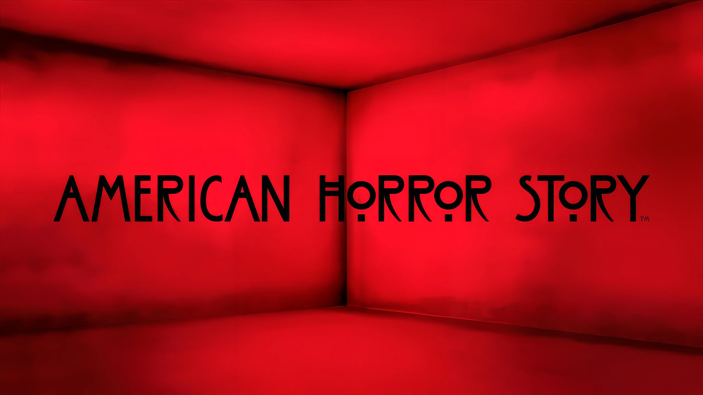

American Horror Story
Es una serie estadounidense de terror creada por Ryan Murphy y Brad Falchuk. Desde su estreno en 2011, la serie se caracteriza por contar una historia diferente en cada temporada, explorando distintas formas del horror y combinándolas con drama, misterio y elementos sobrenaturales.
A lo largo de sus temporadas, American Horror Story ha recorrido escenarios como casas embrujadas, hospitales psiquiátricos, aquelarres de brujas, hoteles, circos, cultos y apocalipsis.
Una serie. Muchas historias. Infinitas formas de horror.
Sobre la serie
American Horror Story se diferencia de otras series de terror principalmente por su estructura de antología.
En lugar de continuar una única historia durante todas sus temporadas, cada temporada presenta un nuevo universo narrativo. Esto permite que los creadores exploren diferentes subgéneros del terror y construyan una estética particular para cada historia.
La serie utiliza elementos clásicos del horror —fantasmas, brujas, asesinos, monstruos y fenómenos sobrenaturales— pero también incorpora problemáticas sociales, históricas y psicológicas.
Por eso, el terror de AHS no se basa únicamente en provocar miedo: muchas de sus historias utilizan el género para hablar sobre temas como la discriminación, la violencia, la religión, el poder, la fama, la sexualidad, la salud mental y los vínculos familiares.